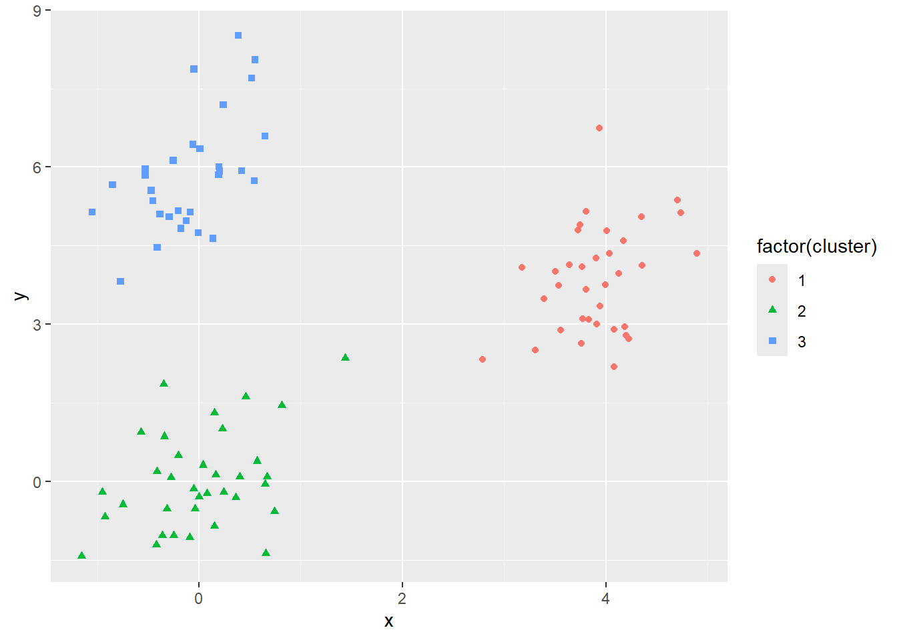
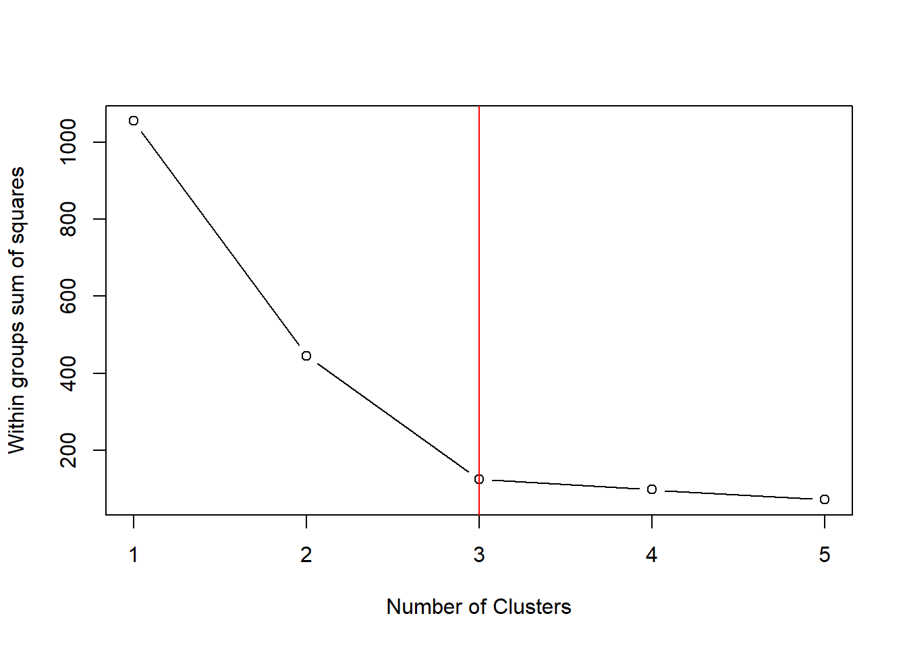

library(tidyverse) # datahåndtering, grafikk og glimpse()
library(skimr) # funksjonen skim() for å se på data
library(rsample) # for å dele data i training og testing
library(dendextend)
library(directlabels)10 Unsupervised learning
I dette kapittelt skal vi bruke følgende pakker:
“Usupervised learning” er betegnelsen på en type teknikker der vi ikke har et spesifikt observerbart utfall. (Alle andre teknikker for prediksjon kaller vi derfor “supervised learning”). De teknikkene for unsupervised learning vi skal se på her er vanlige former for klustering og datareduksjon.
Det er to vanlige formål med disse teknikkene:
- beskrive et stort og komplisert materiale ved å forenkle til noen færre kategorier
- lete etter underliggende strukturer i data som ikke er direkte observerbart
- pre-prosessering av data før man fortsetter med supervised learning
Formål 2) er litt kryptisk, men f.eks. en bedrift kan ha nytte av å dele inn kundemassen i ulike segmenter og rette seg inn mot disse på en systematisk måte.1
For formål 3) gjelder hvis man har veldig mange variable som er korrelerte, men hver for seg ikke er særlig sterke prediktorer. Vanlige prediksjonsmodeller vil ikke alltid være så effektive i slike situasjoner. Forenklede variable som klustre eller principal components kan da fungere bedre. En liten advarsel: man ser litt for ofte at denne typen resultater tolkes litt spekulativt i den forstand at klustre eller principal components tillegges en substansiell betydning. Det hender folk sier at de har “identifisert” underliggende klustre eller dimensjoner etc.2 Men altså: klustermetoder lager klustre. Så teknikken lager klustre uansett, og det er ingen magisk innsikt her utover det. Men det kan være nyttig det, altså!
10.1 K-means klustering
Vi starter med et tenkt eksempel der det er to variable og tre klustre, men tilhørighet til kluster er ikke direkte observerbart (altså: det er ingen variable for kluster).
Her ser du de første seks observasjonene i datasettet:
x y
1 -0.7708857 3.821888
2 4.1734709 4.597204
3 0.5497190 8.046265
4 -0.2492836 -1.024751
5 -0.4691657 5.556987
6 3.9338419 6.738554Vi kan så plotte x og y i et scatterplot. I dette tilfellet ser vi tydelig at det er tre klynger av datapunkter. Ofte vil det ikke være så lett å se, men disse dataene er laget slik at det skal være lettere å se hvordan algoritmen fungerer.

I plottet er punktene nå lagt inn tre tilfeldige punkter som marker startpunktet for algoritmen. Disse punktene er tilfeldig valgt, og markerer et første steg som forsøksvis sentrum av tre klustre. Antall klustre må vi altså bestemme selv i forkant.
For hvert av øvrige datapunktene regnes det så avstanden til hvert av disse tre tilfeldige “klustrene”. Hvert datapunkt klassifiseres så til det klusteret de er nærmest.
Etter at hvert datapunkt er klassifisert til det “klusteret” de er nærmest, kan det så regnes det ut midtpunktet for hvert kluster. Dette midtpunktet er så utgangspunktet for neste runde med klassifisering: avstanden fra alle datapunkter til midtpunktet regnes ut og ny klassifisering til det klusteret datapunktet er nærmest.

Etter ny klassifisering, regnes det så ut et nytt midtpunkt og vi gjør det hele en gang til: regner ut avstanden og klassifiserer til nærmeste.

Et nytt midtpunkt regnes ut og vi gjør det hele enda en gang.

Merk nå at i siste runde var det ingen av punktene som byttet kluster. Da avsluttes algoritmen og alle punkter er klassifisert etter hvilket kluster de er mest lik de andre punktene.
I dette eksempelet er klusterne tydelig separert og det er forholdsvis lett å gjøre klassifiseringen. I andre tilfeller er det ikke nødvendigvis like greit, og det må langt flere iterasjoner til før det landes på en løsning.
Det er verd å merke seg at startpunktet (altså de tre tilfeldige punktene) kan ha betydning for løsningen. Det er derfor vanlig at software tester ut flere startverdier og velger den løsningen som passer best.
10.1.1 K-means med kmeans()
Vi bruker eksempeldatasettet brukt ovenfor.
df <- readRDS("data/kmeans_data.rds")
head(df) x y
1 -0.7708857 3.821888
2 4.1734709 4.597204
3 0.5497190 8.046265
4 -0.2492836 -1.024751
5 -0.4691657 5.556987
6 3.9338419 6.738554Det er en del plunder med å gjøre kmeans manuelt. Heldigvis er det en funksjon som fikser hele saken for oss. Funksjonen kmeans() trenger primært tre imput: de dataene som skal klustres, antall klustere, og antall tilfeldige startverdier. Antall klustre må vi altså bestemme selv.
Her er en kode som først kjører kmeans-algoritmen. I det objektet som kommer ut er det en vektor som heter ...$cluster som er selve klassifiseringen. Denne kan vi legge inn som en ny variabel i datasettet. Merk at rekkefølgen på observasjonene og output-objektet er den samme, så det blir riktig å bare legge til vektoren som en ny variabel. Dernest kan vi plotte resultatet.
km_df <- kmeans(df, centers = 3, nstart=20)
df_p <- df %>%
mutate(cluster = km_df$cluster)
ggplot(df_p, aes(x=x, y = y, col = factor(cluster), shape = factor(cluster))) +
geom_point()
Dette ble selvfølgelig likt som i den trinnvise prosedyren vist ovenfor. Det kan være greit å være klar over at navnet på hvert kluster (1, 2 eller 3) er tilfeldig og du kan få en annen rekkefølge på navnene en annen gang. Det spiller ingen rolle, men er lett å bli forvirret av.
10.1.2 Hvor mange klustre trenger man?
Tja. Hvis du har en god tanke om hvor mange klustre du trenger, så er jo saken grei. Da bruker du disse. Hvis du derimot ikke vet - og det er det vanlige - så kan du gå for det antallet som best oppsummerer dataene. Men hva er så det? Et mål er summen av avstandene til sentrum innenfor hver kluster. Omtales gjerne som “within total sum of squares”. Den løsningen (dvs. antall klustre) som gir lavest kvadratsummer er da den som er “best”.
I praksis betyr det at man tilpasser modellen flere ganger, med trinnvis flere klustre. Så kan man sammenligne “within total sum of squares”.
Den etterfølgende koden gjør dette. Den er litt krøkete, dessverre da den innebærer å skrive en loop.3 Her er i hvert fall full kode.
wss <- 0
# For 1 to 15 cluster centers
for (i in 1:5) {
km.out <- kmeans(df, centers = i, nstart=20)
# Save total within sum of squares to wss variable
wss[i] <- km.out$tot.withinss
}
# Plot total within sum of squares vs. number of clusters
plot(1:5, wss, type = "b",
xlab = "Number of Clusters",
ylab = "Within groups sum of squares")
# Marker "albuen" med en linje i plottet
abline(v=3, col="red")
Kvadratsummen reduseres for antall klustre. Intuitivt er jo det rimelig: jo flere klustre - jo kortere er avstanden til et kluster-sentrum. Men merk at trenden flater ganske tydelig ut etter 3 klustre. Altså: forbedringen i tilpassning er minimal. Et slikt plot kalles “elbow method” eller “scree plot”. Beste modell er der hvor kurven får en “albue”, eller med andre ord: der reduksjonen avtar. Det er ikke alltid det er lett å bedømme, men her er det ikke en egentlig fasit. Det finnes ingen fasit hvis man ikke fra før av vet at det finnes et gitt antall klustre.
10.1.3 Longitudinelle data
Det er nok vanligst å klustre ulike variable. Men hvis variablene innholder verdier for ulike tidsenheter (f.eks. per år), så kan vi også analysere tidstrender på denne måten. Antall variable som klustres kan være flerdimensjonalt. Ovenfor er det brukt bare to variable, men det normale er jo at det er langt flere dimensjoner samtidig.
10.2 Datareduksjon med principal component analysis (PCA)
En annen form for unsupervised learning er principal component analysis (PCA). Dette er en teknikk som reduserer dimensjonaliteten i et datasett. Med dimensjonalitet mener vi i praksis antall variable. I et datasett med mange variable kan det være vanskelig å se sammenhenger og strukturer. PCA reduserer antall variable til et fåtall “hovedkomponenter” som forklarer mesteparten av variansen i datasettet. Det man får ut av PCA er nye variable som er lineære kombinasjoner av de opprinnelige variablene. Den første hovedkompenenten er den som forklarer mest av varians i variablene. Den andre forklarer nest mest osv. For den første principal component (PC1) får hver variabel en factor loading som forteller hvor mye variabelen bidrar til PC1.
Det som noen ganger kalles principal component regression er en variant der man bruker den første hovedkomponenten som prediktor i en regresjonsanalyse. Dette tilsvarer å lage en indeks av de opprinnelige variablene.
10.2.1 Empirisk eksempel
Vi starter med datasettet for kriminalitet i norske kommuner, og velger en enkelt årgang for enkelhets skyld. Vi beholder et begrenset sett av variable av ulik art.
kommune <- readRDS( "data/kommunedata.rds") %>%
filter(year == 2020) %>%
mutate(kommune = ifelse(kommune == "Oslo municipality", "Oslo", kommune)) %>%
select(kommune, menn_18_25:menn_18min, inntekt_totalt_median:andre_lovbrudd) %>%
select(-inntekt_eskatt_median) %>%
column_to_rownames(var = "kommune")
glimpse(kommune)Rows: 251
Columns: 15
$ menn_18_25 <int> 38847, 857, 8743, 2288, 4520, 189, 1156, 1223, …
$ menn_26_35 <int> 78059, 1045, 11750, 2811, 6635, 197, 1517, 1540…
$ menn_36_67 <int> 150390, 3362, 32531, 8827, 18329, 715, 4230, 44…
$ menn_67plus <int> 42590, 1344, 10301, 2962, 5599, 293, 1475, 1474…
$ menn_18min <int> 36298, 916, 8710, 2238, 5422, 216, 1382, 1404, …
$ inntekt_totalt_median <int> 661000, 739000, 764000, 647000, 791000, 716000,…
$ ant_husholdninger <int> 348864, 6493, 64617, 17846, 33784, 1331, 7801, …
$ shj_klienter <int> 20182, 329, 3929, 1024, 1972, 49, 394, 269, 330…
$ shj_unge <int> 2488, 67, 844, 195, 393, 10, 80, 40, 68, 56, 79…
$ vinningskriminalitet <dbl> 31.9, 9.7, 22.3, 21.2, 18.1, 5.0, 6.4, 9.3, 19.…
$ voldskriminalitet <dbl> 11.0, 3.9, 7.0, 10.3, 6.4, 3.5, 6.5, 4.2, 6.1, …
$ nark_alko_kriminalitet <dbl> 7.0, 6.9, 7.2, 10.7, 6.4, 3.2, 4.1, 5.3, 6.0, 4…
$ ordenslovbrudd <dbl> 10.8, 4.0, 4.9, 10.0, 4.6, 3.5, 3.3, 3.6, 5.0, …
$ trafikklovbrudd <dbl> 6.7, 10.2, 5.2, 5.6, 6.8, 5.0, 6.3, 7.1, 6.5, 6…
$ andre_lovbrudd <dbl> 18.3, 9.2, 11.5, 12.7, 9.2, 6.3, 8.7, 9.2, 13.4…Så et lite triks som ikke er viktig for resultatet som sådan, men hjelper i visualiseringen litt senere er å bruke radnavn. Vi er kjent med at kolonnene i et datasett har navn: altså variabelnavn. Men i R kan også radene ha navn. Det er ikke like vanlig å bruke til noe spesielt og kan med fordel unngås til vanlig. Men akkurat her gjør det at kommunenavnene vises når vi bruker funksjonen biplot nedenfor. Analyse vil ellers fungere like godt uten denne koden.
Kodesnutten column_to_rownames(var = "kommune") gjør om variabelen kommune til radnavn. Da er det bare de numeriske verdiene igjen som skal analyseres.^(Hvis ikke måtte første kollonne fjernes manuelt først før PCA.)
Hvis vi skal visualisere dataene kan man bruke et scatterplot matrise, der alle par av variable plottes mot hverandre. Dette kan gjøres med GGally-pakken, og her er det valgt ut bare noen få av variablene.
library(GGally)
ggpairs(kommune[ ,c(1, 3, 6, 7, 8, 10, 11)])Dette var bare noen få variable, og det gir rett og slett ikke så mye sammenheng. Med flere variable blir det enda vanskeligere å få noe ut av dette.
I stedet kan vi kjøre en principal component analyse med prcomp. Det er her viktig å sette scale = TRUE og center = TRUE. Dette er innebygde funksjoner som standardiserer dataene før algoritmen kjøres. Altså: dataene re-skaleres til en z-skår med gjennomsnitt 0 og standardavvik 1. Det skal veldig gode grunner for å gjøre noe annet, så gjør alltid dette. Koden nedenfor viser hvordan dette gjøres og gir en oppsummering av resultatet.
library(stats)
pr_komm <- prcomp(kommune, scale = TRUE, center = TRUE)
summary(pr_komm)Importance of components:
PC1 PC2 PC3 PC4 PC5 PC6 PC7
Standard deviation 2.9168 1.7360 1.0247 0.93725 0.76413 0.62529 0.52844
Proportion of Variance 0.5672 0.2009 0.0700 0.05856 0.03893 0.02607 0.01862
Cumulative Proportion 0.5672 0.7681 0.8381 0.89666 0.93559 0.96165 0.98027
PC8 PC9 PC10 PC11 PC12 PC13 PC14
Standard deviation 0.45542 0.22179 0.16826 0.09232 0.04158 0.02350 0.01383
Proportion of Variance 0.01383 0.00328 0.00189 0.00057 0.00012 0.00004 0.00001
Cumulative Proportion 0.99410 0.99738 0.99926 0.99983 0.99995 0.99998 1.00000
PC15
Standard deviation 0.006418
Proportion of Variance 0.000000
Cumulative Proportion 1.000000Resultatet vises som en liste over de ulike komponentene. Den første komponenten forklarer mest av variansen, den andre nest mest osv. I dette tilfellet er det 15 komponenter. I praksis bryr vi oss mest om de første par komponentene hvis de forklarer tilstrekkelig av variansen. Her fanger de 3 første komponente opp over 80% av variansen.
PCA-objektet inneholder flere elementer som vi skal bruke nedenfor. En enkelt måte å få innsikt på er å bruke names-funksjonen slik: names(pr_komm). Men det er først og fremst pr_komm$x og pr_komm$sdev som er interessante. x en matrise med de nye variablene som er lineære kombinasjoner av de opprinnelige variablene, altså et datasett men i matriseformat. sdev er standardavviket for de ulike komponentene, som vistes i første linjen i summary(pr_komm).
Det er vanlig å undersøke dette visuelt med et såkalt biplot. Dette er et scatterplott av PC1 og PC2 der hver enhet plasseres i forhold til disse. I tillegg vises factor loadings for hver variabel som piler. Dette plottet kan lages manuelt med ggplot, men det er enklere å bruke biplot-funksjonen som er spesielt til dette formålet. Argumentene cex =, cex.axis = og cex.lab = er bare for å justere størrelsen på teksten.
par(mar=c(2,1,2,1))
biplot(pr_komm, cex = .4, cex.axis = .6, cex.lab = .6)Det skal innrømmes at dette plottet er heller ikke så lett å tolke uten videre, men først og fremst fordi en del tekst kommer oppå hverandre. Så kanskje bør man ta en titt på tabellen for factor loadings for de to første komponentene i tillegg.
Det er en del informasjon i dette plottet. Pilene viser factor loadings for hver variabel som retningen og lengden på pilen. Jo lengre pilen er, jo mer bidrar variabelen til den aktuelle komponenten. Navnet til hver enkelt kommune plassert i forhold til de ulike komponentene.^(Ovenfor var en kodesnutt som la kommunenvanene som radnavn. Hvis du ikke gjør dette kommer det punkter i stedet for navn.) Hvis to kommuner er plassert nærme hverandre, så er de like i forhold til de ulike komponentene. Hvis de er langt fra hverandre, så er de mer ulike. Vi ser bl.a. at Oslo skiller seg markant fra alle andre, men at Bergen og Trondheim er ganske like i samme retning. Eidskog og Storfjord ligger i en ganske annen retning.
Factor loadings viser hvor mye hver variabel bidrar til den aktuelle komponenten. Dette kan hentes ut med pr_komm$rotation.
pr_komm$rotation[,1:2] PC1 PC2
menn_18_25 -0.33792095 -0.07587793
menn_26_35 -0.33237562 -0.07821625
menn_36_67 -0.33821683 -0.07861761
menn_67plus -0.33780595 -0.07199199
menn_18min -0.33784682 -0.08210436
inntekt_totalt_median -0.01193920 -0.29303956
ant_husholdninger -0.33756612 -0.07461240
shj_klienter -0.33696954 -0.05772102
shj_unge -0.33526870 -0.04465173
vinningskriminalitet -0.22517571 0.15789636
voldskriminalitet -0.13166583 0.30314878
nark_alko_kriminalitet -0.07976900 0.47778643
ordenslovbrudd -0.10983165 0.47841028
trafikklovbrudd 0.02793681 0.27213087
andre_lovbrudd -0.07347364 0.47456658Variablene knyttet til befolkningsstruktur, husholdninger og sosialhjelp er de som bidrar mest til PC1. Variablene knyttet til kriminalitet er de som bidrar mest til PC2. Dette er en ganske vanlig situasjon: at ulike typer variabler grupperer seg sammen.
Vinningskriminalitet og voldskriminalitet har ganske lik factor loading. Det samme gjelder for ordenslovbrudd og lovbrudd knyttet til narkotika eller alkohol. Trafikklovbrudd skiller seg derimot en del fra de andre.
Det er også mulig å hente ut annen informasjon fra PCA-objektet. For å se på factor loadings for hver kommune kan vi undersøke x-matrisen i pca-objektet slik:
head(pr_komm$x) PC1 PC2 PC3 PC4 PC5 PC6
Oslo -36.2152871 -3.3589170 -3.61987278 1.5796871 1.69548317 -1.5205907
Eigersund 0.3255626 -0.2584199 -0.03666622 -0.9807707 -0.02031745 0.4910471
Stavanger -7.5958070 -0.6954589 0.85631587 -0.8439319 -0.55236111 0.6868140
Haugesund -2.2591243 3.0407132 2.45903993 0.3473917 -0.75265692 0.4190413
Sandnes -3.6550792 -0.6421373 1.04457813 -1.1874560 -0.79853612 0.3761694
Lund 1.3080115 -1.3580525 0.07262183 -0.1467664 0.46478544 0.2748177
PC7 PC8 PC9 PC10 PC11
Oslo 0.8429949 -0.13723957 1.59973261 0.34396760 -0.13713995
Eigersund -0.3297569 0.23264668 0.12130524 0.06690595 0.01749551
Stavanger -0.3576591 -0.38915833 -0.98765200 0.47566254 -0.15554017
Haugesund 0.3222269 0.33884799 0.16635971 0.02685071 0.05791093
Sandnes -0.1232278 -0.08447287 -0.19051611 0.07485071 -0.03172295
Lund 0.2711364 0.37422030 0.07565397 0.09404634 0.02400264
PC12 PC13 PC14 PC15
Oslo 0.003217221 0.015726770 0.006527252 4.225039e-03
Eigersund 0.023459796 0.007227856 0.005629813 -6.671129e-03
Stavanger -0.272292222 0.046925140 -0.078905279 5.997904e-05
Haugesund -0.018734038 -0.004144584 -0.048563010 4.208489e-03
Sandnes -0.302434770 0.044195747 0.056770766 -2.383804e-02
Lund -0.012819552 -0.005538676 -0.003225749 4.169959e-03Dette er en matrise med de nye variablene som er lineære kombinasjoner av de opprinnelige variablene. Hver rad er en kommune, og hver kolonne er en utregnet komponent.
Standardavviket for de ulike komponentene er gitt i pr_komm$sdev. Dette kan brukes til å regne ut andelen av variansen som forklares av hver komponent. Vi kan også plotte dette.
pvar <- pr_komm$sdev^2 # kvadrerte standardavvik (dvs. variansen)
pve <- pvar/sum(pvar) # Hver komponents andel av variansen
# Hver komponents andel av variansen lagres i en data.frame for å kunne plottes med ggplot
dt <- data.frame(components = 1:length(pve), prop_var_expl = pve)
ggplot(dt, aes(x = components, y = prop_var_expl))+
geom_line()+
geom_point()
Dette er en visualisering av hvor mye hver komponent bidrar til å forklare variansen i datasettet. Vi ser at de første komponentene forklarer mest, og at det flater ut etter hvert. Der hvor kurven flates ut med en “albue” er et godt sted å stoppe. I dette tilfellet er det etter 3 komponenter som summerer opp det meste av dataene.
Slik sett er datasettet redusert fra 15 variable til 3. Der de opprinnelige variablene var korrelerte i varierende grad, så er de tre nye variablene ikke korrelerte, men representerer ulike dimensjoner. Merk at de nye variablene beholder det aller meste av informasjonen i de opprinnelige dataene (jf. plottet over), og er mye mer effektivt enn å bruke alle de opprinnelige variablene i en regresjonsanalyse eller bare plukke ut noen få som tilsynelatende er viktigst isolert sett.
OBS! Det spiller ingen rolle om disse gruppene er reelle som gruppe eller ikke. At de oppfører seg rimelig likt holder til formålet.↩︎
Av høflighetsgrunner er referanser til eksempler utelatt. Men det er ikke vanskelig å finne. Eksemplene er heller ikke avgrenset til akkurat disse metodene, men gjelder også en rekke andre teknikker med tilsvarende formål.↩︎
Det er muligens greit for de av dere som har lært en god del R tidligere. Ikke like greit for dere andre. ↩︎